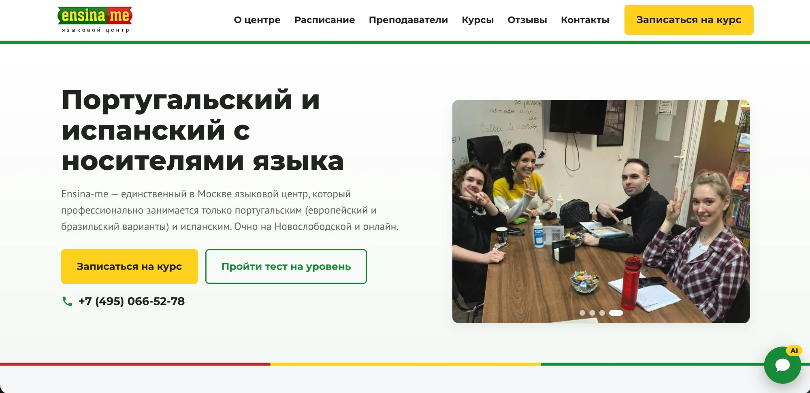
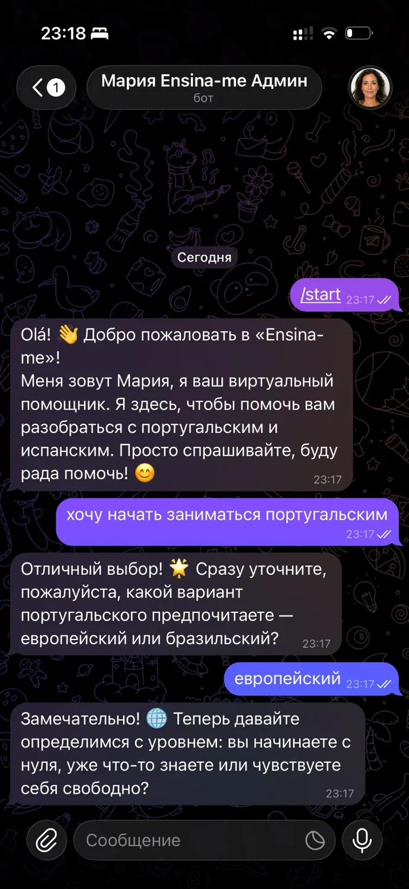
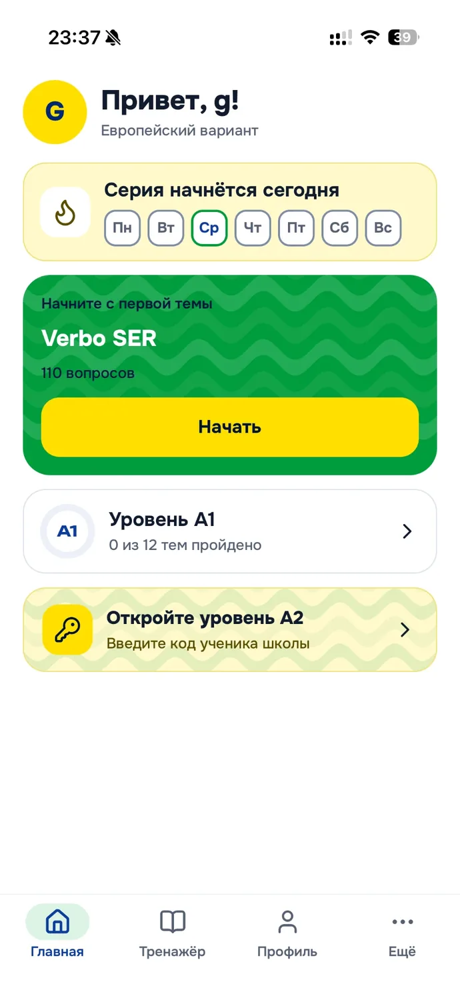

ИИ-ассистент для языковых школ и образовательных центров
Школа перестаёт терять заявки
ИИ-ассистент отвечает родителям в Telegram, WhatsApp и MAX круглосуточно: консультирует по предметам и ценам, подбирает преподавателя под запрос и доводит до записи на пробное. Заявка сразу попадает в вашу CRM. Отдельно — возвращает учеников, которые перестали ходить.
Отвечает настоящий ассистент, не заготовка. Тот же движок, что у Ensina-me.
Школа Ensina-me, сентябрь 2026 к сентябрю 2025. Тонкая полоса — было, толстая — стало.
Родитель пишет вечером или в выходные — и ждёт ответа до утра. Администратор не всегда на связи. Тот, кто ищет школу, пишет сразу в три места и остаётся там, где ответили первыми. Заявка теряется не потому, что школа плохая, а потому что между вопросом и ответом прошло двенадцать часов.
Это не единственное место, где школа теряет деньги.
- 30раз в неделю одно и то жеАдминистратор отвечает на одни и те же вопросы по тридцать раз в неделю: сколько стоит, есть ли онлайн, с какого возраста берёте, когда ближайшая группа. Это часы в месяц, за которые никто не платит.
- 50%не доходят до пробногоПоловина записавшихся на пробное не доходит, потому что им никто не напомнил.
- 10+учеников в год без продленияУченик заканчивает уровень, не продлевает — и о нём больше никто не вспоминает. За год таких набираются десятки, и каждый из них когда-то уже выбрал вашу школу.
Всё это не катастрофа. Школа работает, ученики ходят, деньги идут. Просто каждый месяц какая-то часть выручки утекает в места, которые никто не считает: в неотвеченные вечерние сообщения, в несостоявшиеся пробные, в учеников, о которых забыли. Эти деньги не появляются в отчётах как потеря — они просто не приходят.
Новый ученик стоит дорого. Потерянный не стоит ничего — и именно поэтому его никто не считает.
Посчитайте, сколько теряет ваша школа
Три вопроса. Считаем по-честному, с заниженными допущениями — реальные цифры обычно выше.
У нас примерно учеников
Средний чек за курс — ₽
В месяц приходит новых обращений
Теряется на медленных ответахв месяц
36 000₽
Пятая часть обращений приходит вне рабочего времени. Без мгновенного ответа большая часть из них уходит туда, где ответили первыми.
Теряется на неявкахв месяц
54 000₽
Примерно четверть обращений доходит до записи на пробное, и около трети записавшихся не приходят, потому что им никто не напомнил.
Лежит в базе и не возвращаетсяза год
648 000₽
За год примерно треть учеников заканчивает уровень или пропадает и не возвращается. Каждому из них когда-то уже подошла ваша школа.
В месяц мимо кассы проходит около
90 000₽
Чтобы окупить работу, достаточно вернуть 6 учеников.
Это оценка по средним допущениям, а не прогноз. Точные цифры по вашей школе видно только в вашей CRM — на созвоне посмотрим их вместе.
Отдельный модуль
Возврат учеников, о которых забыли
Все CRM для школ начинают работать, когда ученик уже пришёл: расписание, оплаты, посещаемость, прогресс. Это полезно. Но ни одна из них не занимается теми, кто ушёл.
А в вашей базе они есть, и их больше, чем кажется.
- Тот, кто закончил A2 и не записался на B1.
- Тот, кто перестал ходить в марте и не вернулся.
- Тот, кто сходил на пробное, но так и не начал.
Каждый из них когда-то уже выбрал вашу школу. Ему не нужно объяснять, кто вы, где вы находитесь и как у вас преподают. Он просто выпал из потока — и никто за ним не вернулся, потому что это ничья задача: администратор занят новыми, преподаватель ведёт занятия, а CRM показывает только тех, кто ходит сейчас.
Как это работает
Ассистент разбирает историю в вашей CRM и сам находит эти группы: по дате последнего занятия, по завершённому уровню, по несостоявшемуся пробному.
Дальше пишет каждому — не рассылкой «у нас скидка», а сообщением под конкретную ситуацию: какой уровень он закончил, что логично идёт следующим, когда стартует подходящая группа и у какого преподавателя.
Кто ответил — попадает в обычный диалог с ассистентом: тот отвечает на вопросы, подбирает расписание и доводит до записи. Готовую заявку принимает администратор.
Настраивается один раз и работает дальше само. Каждый месяц в эти группы попадают новые люди, и каждый месяц ассистент их обрабатывает.
Привлечь нового ученика стоит в разы дороже, чем вернуть того, кто уже учился у вас.
Как это работает у школы Ensina-me
Школа португальского и испанского в Москве: 24 преподавателя, 22 группы, онлайн и офлайн, подготовка к экзаменам DELE, CAPLE и Celpe-Bras.
Сайт работал на CMS десятилетней давности: расписание правилось вручную через разработчика, часть страниц не открывалась с телефона, актуальные цены жили в голове у администратора. Заявки приходили в WhatsApp и Telegram вперемешку с личными сообщениями. Вечерние обращения обрабатывались на следующий день, а часть просто терялась в переписке.
Руководитель школы сам вёл занятия и не мог прерывать урок ради каждого нового обращения.
ИИ-ассистент
Отвечает в Telegram и на сайте: консультирует по языкам, уровням, форматам и ценам, уточняет цель обучения, подбирает преподавателя из базы школы и доводит до записи на пробное. Заявка с контактами и запросом автоматически попадает в AlfaCRM, администратор получает уведомление.
Новый сайт
Больше двадцати страниц: карточки всех преподавателей с биографиями, расписание 22 групп с фильтром по языкам, страницы экзаменов, корпоративного обучения и разговорного клуба, онлайн-оплата, блог. Поставили CMS, чтобы администратор правил тексты и фото сам, без разработчика.
Мобильное приложение
Упражнения по уровням, прогресс ученика, подписка через код, push-уведомления. Опубликовано в App Store и RuStore.



Обычно я отвечаю на входящие звонки на автомате: вежливо говорю «спасибо, сейчас нет необходимости» и кладу трубку. Но в этот раз я почему-то решил дослушать предложение до конца. И меня зацепило одно слово — «ИИ для приёма заявок в Telegram».
Проблема нашей школы была в том, что администратор часто вне зоны доступа, а я сам не могу прервать урок ради каждого нового ученика. В итоге мы теряли заявки. Услышав про решение, я задал пару уточняющих вопросов — так мы и познакомились с Ильдаром.
Дальше мы переписывались в WhatsApp, и он скинул мне демо-видео работы ИИ-администратора. Мне понравилось, и мы договорились о встрече, чтобы детально обсудить мои задачи и функции, которые нужны именно для моей школы.
Ильдар очень внимательно слушал, составил чёткое техническое задание, прислал проект и смету. Меня полностью устроили условия и стоимость, поэтому я сразу внёс предоплату 50%.
На протяжении всей работы он был на связи. Всё сделал оперативно: подключил бота, мы начали тестирование. Все ошибки в ответах и баги исправлялись моментально. Ильдар ответственно подошёл к делу, глубоко вник в специфику школы, и в итоге сделал бота, который общается с клиентами как живой человек.
На тестировании я так увлёкся, что специально придумывал новые вопросы, лишь бы бот не переводил меня в заявку, а продолжал диалог 😄
Огромное спасибо Ильдару за такого крутого ИИ-помощника! Теперь заявки не теряются — это действительно прорыв. Очень рекомендую!
Хочу снова поблагодарить Ильдара за помощь и создание современного сайта для школы Ensina-me. Изначально мы отлично посотрудничали над созданием бота-ассистента для сбора заявок, а после этого перешли и к разработке сайта. В итоге получилось решение «два в одном»: новый современный сайт с интегрированным ботом и удобным меню для клиентов, которые ищут курсы.
Теперь посетители могут быстро ознакомиться с предложениями и ценами, а бот помогает им оперативно принять решение и оставить заявку. С Ильдаром было комфортно работать: он быстро понимал, что именно мы хотим, всегда был на связи и сразу вносил правки, если что-то нам не нравилось.
Надеюсь, что у него будет много желающих сотрудничать. Успехов в работе! Спасибо!
Проверьте сами
Ассистент на первом экране отвечает по-настоящему, без заготовок. Тот же движок работает у Ensina-me в Telegram и на сайте.
Как ассистент разговаривает
Это не бот с кнопками «1 — цены, 2 — расписание». Он ведёт разговор: понимает вопрос в свободной форме, помнит, что ему уже сказали, и не переспрашивает одно и то же.
Он знает только то, что знает ваша школа: ваши предметы, преподавателей, цены, форматы и расписание. Если вопрос выходит за эту рамку — он не выдумывает ответ, а передаёт разговор администратору.
Работает в Telegram, WhatsApp и MAX, и виджетом прямо на сайте — там, где клиенту удобно, а не там, где удобно вам.
Попробуйте сами — демо выше отвечает на тех же правилах.
Что делает ассистент
- Отвечает в Telegram, WhatsApp и MAX — там, где уже пишут ваши клиенты
- Консультирует по предметам, форматам, ценам и уровням
- Подбирает преподавателя под запрос из вашей базы
- Доводит до записи на пробное занятие
- Передаёт заявку и контакты в CRM
- Напоминает о занятии и об оплате
- Возвращает тех, кто перестал ходить: находит в CRM учеников, закончивших уровень и не продливших, и тех, кто пропал на два месяца, и пишет им сам
- База знаний обновляется вами, без разработчика
30 дней от созвона до запуска
- 01
Созвон
Разбираем, как у вас сейчас обрабатываются заявки и что теряется.
- 02
Материалы
Вы передаёте список предметов, преподавателей, цен и расписание.
- 03
Сборка
Собираю ассистента на ваших данных, подключаю CRM и мессенджеры.
- 04
Тест
Вы проверяете на реальных вопросах, правлю на ходу.
- 05
Запуск
Передаю доступы, показываю, как обновлять базу знаний.
Срок считается с момента получения материалов.
Бот, все доступы, код и база знаний принадлежат вам с момента запуска и продолжают работать без моего участия.
Оформляется на школу, не на меня
- Сервер
- Аккаунты мессенджеров
- Ключи доступа
- Код
- База знаний
Я не держу вас на привязи. Сервер, аккаунты мессенджеров, ключи доступа и база знаний оформляются на школу — не на меня. Если завтра мы перестанем работать вместе, ничего не выключится.
Подписки за сам факт работы бота нет. Остаются только расходы на сторонние сервисы — нейросеть и хостинг, — обычно одна‑две тысячи рублей в месяц, и платите вы их напрямую, а не мне.
Базу знаний вы правите сами: поменялись цены или преподаватели — обновили таблицу, бот начал отвечать по‑новому. Разработчик для этого не нужен.
Сопровождение за 3 000 ₽/мес — по желанию, если правки и мониторинг удобнее отдать мне. Первый месяц включён, отключается в любой момент, бот продолжает работать в прежнем режиме.
Стоимость
Школа под ключ
Если сайту больше пяти лет или его делали на скорую руку.
Что входит
- Новый сайт: структура, тексты, адаптив под телефон, CMS для самостоятельных правок
- ИИ-ассистент в Telegram + один мессенджер на выбор: MAX или WhatsApp
- Виджет чата на сайте
- Интеграция с вашей CRM: заявки, контакты, источник
- Напоминания о занятии и об оплате
- Возврат учеников по истории CRM
- База знаний, которую вы обновляете сами
- 30 дней бесплатных правок после запуска
Система заявок
Если сайт свежий и менять его незачем.
Что входит
- ИИ-ассистент в Telegram + один мессенджер на выбор: MAX или WhatsApp
- Виджет чата на ваш действующий сайт
- Интеграция с вашей CRM
- Напоминания о занятии и об оплате
- Возврат учеников по истории CRM
- База знаний, которую вы обновляете сами
- 30 дней бесплатных правок после запуска
30 дней от получения материалов. Оплата 50/50: половина на старте, половина — когда вы увидели готового ассистента в работе.
Сопровождение — 3 000 ₽/мес, первый месяц включён.
Мобильное приложение для школы — отдельно, обсуждаем на созвоне.
Меня зовут Ильдар. Я делаю это сам: от первого разговора до запуска вы общаетесь со мной, а не с менеджером, который пересказывает задачу разработчику.
Я собираю ИИ-ассистентов и сайты для образовательных центров под брендом idmAI. Не агентство: нет отдела продаж, нет аккаунт-менеджеров, нет очереди из тридцати проектов. Поэтому сроки, которые я называю, настоящие, а правка не ждёт своей очереди неделю.
Работаю так: сначала разбираюсь, как у школы устроена работа с заявками, и только потом предлагаю решение. Если вижу, что задача не решается ботом — говорю об этом прямо, а не продаю то, что умею.
Беру немного проектов одновременно, чтобы каждый вести лично. Иногда это значит, что ближайший слот — через пару недель.
Самозанятый, работаю по договору, с чеком. Сервер, доступы, код и база знаний оформляются на школу.
Есть ли пробный период?
У сервисов с самостоятельной настройкой пробный период есть, потому что вы получаете доступ и несколько дней заполняете предметы, цены и сценарии сами. Здесь пробовать нечего — я собираю бота под ваш центр на ваших данных. Вместо триала: 50% предоплата, я собираю и показываю готового бота на ваших преподавателях и предметах, остальные 50% — только после того, как вы увидели его в работе.
Чем это лучше формы заявки на сайте?
Форма помогает тем, кто уже знает, какой преподаватель нужен. Но большинство родителей не знают: какой репетитор подойдёт сыну в шестом классе, с чего начать подготовку к экзамену, так же ли эффективен онлайн. Форма им не поможет — они уйдут без ответа.
Почему разовый платёж, а не подписка?
Готовые сервисы работают по подписке, за три года это выходит в сотни тысяч. Здесь настроенный бот принадлежит вам с момента запуска: доступы, база знаний, код — всё ваше, бот работает без моего участия.
А если у нас уже есть CRM?
Это плюс. Я не заменяю вашу систему, а подключаюсь к ней: заявки от бота попадают туда же, куда и все остальные, а история учеников используется для возврата тех, кто перестал ходить.
Безопасны ли данные клиентов?
Токены и ключи доступа хранятся на сервере, а не в коде или на сайте. Переписки и контакты учеников и родителей не передаются третьим лицам и используются только для работы вашего бота.
Что если поменяются цены или преподаватели?
Достаточно обновить таблицу — бот подхватит изменения автоматически и начнёт отвечать по новым данным.
Сколько школ вы уже сделали?
Честно: Ensina-me — мой самый большой проект, и он описан здесь целиком, с цифрами и контактами школы. Вы можете открыть их сайт, написать боту и убедиться, что всё работает. Я предпочитаю показывать один проект подробно, чем список логотипов без подробностей.
А если бот ответит клиенту неправильно?
На тестировании вы задаёте ему любые вопросы и смотрите, что он отвечает — правки вношу на ходу, пока вас всё не устроит. Дальше: бот отвечает только по вашей базе знаний и не выдумывает, а на сложном вопросе передаёт разговор администратору. Если что-то всё же всплывёт после запуска — 30 дней правок входят в стоимость.
У нас маленькая школа, нам подойдёт?
Смотря что значит маленькая. Если у вас два преподавателя и десять учеников — скорее всего, вы справляетесь сами, и честнее сказать об этом сразу. Если преподавателей больше десяти, заявки идут в мессенджеры и кто-то из них точно теряется — подойдёт.
Почему я должен доверять работу одному человеку, а не студии?
Справедливый вопрос. В студии вас ведёт менеджер, а делает разработчик, которого вы не видите, и задача пересказывается дважды. У меня вы говорите напрямую с тем, кто делает. Минус: я беру мало проектов одновременно, и иногда ближайший слот — через пару недель.
С чего начать
- Напишите мне в Telegram или WhatsApp. Я задам несколько вопросов: куда вам пишут клиенты, кто отвечает вечером, сколько преподавателей, какая CRM. На это уйдёт минут десять.
- После этого я скажу прямо, есть ли смысл. Если нет — так и скажу, это бывает.
- Если есть — соберу демо на ваших предметах и преподавателях, чтобы вы смотрели не на чужой пример, а на своего ассистента.
Посчитаем, сколько заявок теряется у вас
Напишите — задам несколько вопросов о том, как сейчас обрабатываются обращения, и скажу, есть ли смысл.
+7 995 785-84-51